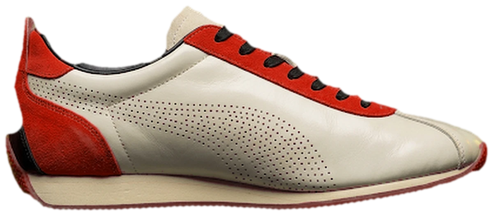
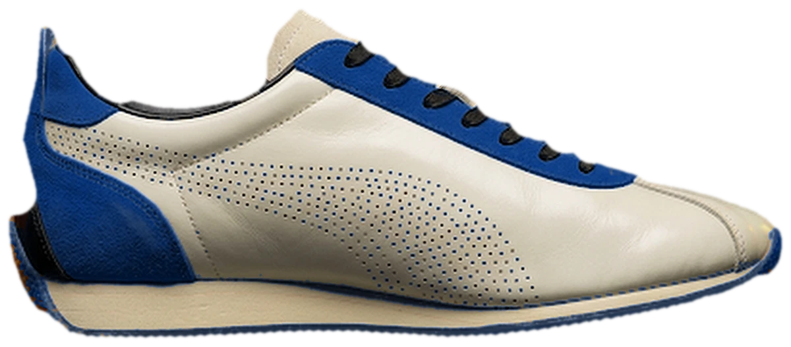
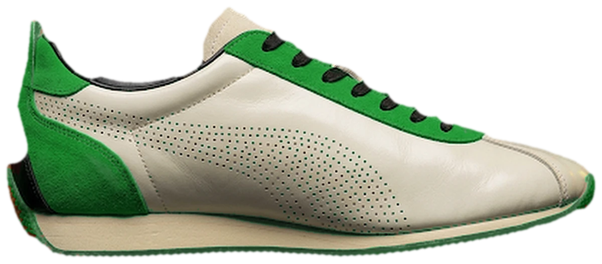
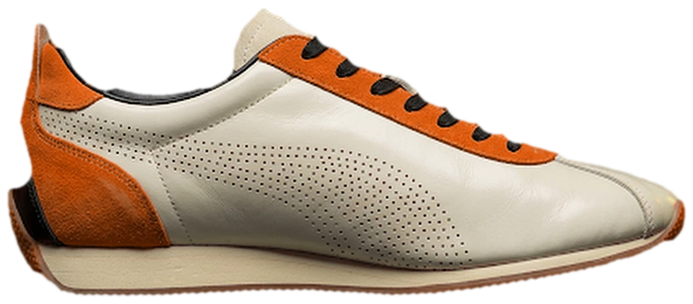
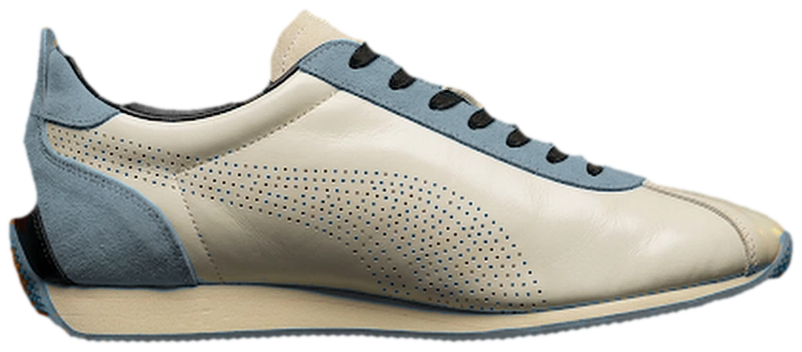

山吹
茜
色見本

紺
常磐
橙
鼠
Drag, swipe sideways, or use the arrows.
街で履く、六色の一足。
色のこと、つくりかたのこと。
このコンセプトを、コラムで読む。

紺
常磐
橙
鼠
No.02DESIGN
The shoe behind paper.
写真は平面だから、斜めから見ると薄く見える。だから靴は、紙の向こうに置くことにした。
読了 約2分
No.03MOTION
A backdrop painted stroke by stroke.
背景は画像ではなく、ページを開くたびに描かれる墨絵。六色に、六枚。
読了 約3分
No.04ABOUT
About this page.
非公式のコンセプト作品です。本物はコードとデザインと文章、架空なのは価格と店。
読了 約1分
登録はいつでも解除できます。
黄、赤、青、緑、橙、灰。ふつうの言い方で通じる六色に、わざわざ昔ながらの名前をつけた理由を、色ごとに。
同じ形の靴を六色で作ると、色に名前が要る。黄、赤、青と呼べば用は足りるけれど、日本には、花や草の根、木の実から取った、もっと細やかな色の名前が昔から残っている。この靴では、その名前を借りることにした。以下は、六色それぞれの名前の由来と、靴のどこに使ったかの覚え書き。
ヤマブキの花の黄色。オレンジと黄色のあいだの、あたたかい黄で、古くから小判の黄金色にたとえられてきた。靴ひもまわりとかかとのスエードに使っている。もともとの設計がこの色だったので、ほかの五色の基準にもなった。
アカネの根で染めた、沈んだ赤。根にはアリザリンという色素があり、古代から使われてきた古い染料のひとつ。万葉集には、この染めの色合いから「紫」「日」などにかかる枕詞として詠まれた歌が、およそ十一首ある。明るい赤ではなく、落ち着いた赤。
藍染めの、深い青。「紺」という呼び名は平安時代の中ごろから使われるようになり、平安の末から鎌倉時代にかけて男性の装いの色として愛され、藍の栽培と染めが盛んになるきっかけになったという。六色のなかでいちばん、街になじむ色。
松や杉のように、一年じゅう葉を落とさない木の緑。常磐木（ときわぎ）の色という意味で、鎌倉時代の歌集『新撰六帖』（一二四四年ごろ）にも色名として出てくる。常に緑であることから、永久に変わらないことの象徴として、縁起のよい名とされてきた。
果物のダイダイの色。「代々栄える」に通じるとして縁起のよい果物とされ、十二月ごろに熟した実が、鏡餅やしめ飾りなど正月の飾りに使われる。六色のなかで、いちばん元気のある色。
ネズミの毛の色にちなむ灰色。この名前が出てくるのは十七世紀前半、江戸時代の初めと考えられている。戦乱の記憶が残る時代で、火事や火葬を思わせる「灰」色が嫌われ、「鼠」という名が生まれたとされる。のちに倹約が奨められるなか、庶民が使える色は茶や鼠、藍といった地味な色が中心になり、江戸中期ごろから流行は茶から鼠へ移っていった。
どれも、派手な名前ではない。けれど、名前がつくと、靴は「黄色い靴」から「山吹の靴」になる。選ぶ理由が、ひとつ増える。
Yellow, red, blue, green, orange, grey. Why six ordinary colours were given older Japanese names, one by one.
A shoe in six colours needs six names. "Yellow, red, blue" would do the job, but Japan has kept a finer set of colour names for centuries, taken from flowers, roots and fruit. We borrowed them. What follows is a short note on where each name comes from and where the colour sits on the shoe.
The yellow of the yamabuki (Japanese kerria) flower: a warm yellow between orange and yellow, long compared to the gold of old koban coins. On the shoe it is the suede around the laces and the heel. The original design was this colour, so it became the reference for the other five.
A subdued red dyed from the root of the akane (madder) plant, whose pigment is alizarin; one of the oldest dyes in use. In the Man'yōshū, an eighth-century poetry anthology, about eleven poems use the colour of madder dye as a makurakotoba, a fixed poetic epithet, for words such as "purple" and "sun". Not a bright red but a settled one.
A deep blue from indigo dyeing. The name kon has been used since the middle of the Heian period, and from the late Heian into the Kamakura period it was a favourite colour for men's clothing, which helped indigo farming and dyeing to flourish. The quietest of the six on a city street.
The green of pine and cedar, trees that keep their leaves all year (tokiwagi). The name appears as a colour in a Kamakura-period waka collection, the Shinsen Rokujō (around 1244), and because evergreens never change, it became an auspicious name, a symbol of permanence.
The colour of the daidai, the bitter orange. The name is said to mean "generation after generation", a wish for lasting prosperity, so the fruit, ripe around December, is used on kagami-mochi and shimenawa for the New Year. The liveliest of the six.
Grey, after the colour of a mouse's fur. The word is thought to appear in the first half of the 17th century, in the early Edo period, when "ash grey" recalled fires and cremation and was avoided. Later, with thrift urged and luxury policed, the colours commoners could wear freely were mostly brown, grey and indigo, and from the mid-Edo period fashion moved from brown to grey.
None of the six is a showy name. But with a name, the shoe stops being "a yellow shoe" and becomes a yamabuki one. That is one more reason to choose it.
写真は平面だから、斜めから見ると薄く見える。だから靴は、紙の向こうに置くことにした。
このページのカルーセルでは、靴の入った戸棚が輪になって並び、正面に来たものだけがこちらを向く。ここで困ったのは、靴の写真が平面だということだった。横から眺めると、写真は板のように見える。
そこで、正面に来るまで戸を閉めておくことにした。戸は障子。木の枠に和紙を貼った建具で、光をやわらかく通す。閉じている間、靴ははっきり見えず、紙の上に影として映る。
カードが正面に近づくと、二枚の戸が左右へ引かれ、影は半分ずつに割れて、そのあいだから靴が現れる。戸は二本のレールに乗っていて、枠の柱の陰へ消えていく。
さえぎるのに、隠しきらない。
障子は、もともと「さえぎる道具」を意味する言葉だったという。いまは、明かりを通すために木枠に和紙を貼った建具をいう。さえぎるのに、隠しきらない。この仕掛けは、そこから始まった。
A product photo is flat. Seen at an angle, the shoe that should look best looks thinnest. So we put it behind paper.
In this page's carousel, the cabinets that hold the shoes stand in a ring, and only the one in front faces you. That raised a problem: a shoe photograph is a flat picture. Seen from the side, it reads as a board.
So the doors stay shut until a cabinet arrives in front. The doors are shoji: a wooden frame covered with washi paper that lets light through softly. While closed, you cannot see the shoe clearly; it shows only as a shadow on the paper.
As the card comes forward, the two leaves slide apart, the shadow splits into halves, and the shoe appears between them. The leaves run on two tracks and slip behind the frame's side posts.
It screens, without hiding completely.
Shoji, we are told, once meant simply "something that screens"; today it means a wooden frame covered with washi to let light in. It screens without hiding completely. That is where the idea started.
背景は画像ではなく、ページを開くたびに描かれる墨絵。六色に、六枚。
このページの背景は、置いてある画像ではない。ページを開くと、ブラウザの中で墨絵が描かれる。六色それぞれに別の絵があり、山吹には松、茜には雁と紅葉、紺には竹、常磐には杉、橙には柿、鼠には雨。
筆は、毛の集まりとして計算している。毛は一本ずつ墨を含んでいて、進むにつれて墨が減り、紙の凹凸の高いところにだけ触れる。すると、筆が乾いたときの「かすれ」が出る。筆を置いたところには墨がたまり、にじむ。山は線では描かず、薄い墨の面を重ねている。
置いてあるのは画像ではなく、筆の動き。
絵は手前・中・奥の三層に分けてあり、マウスの動きや、カードを回す動きにあわせて、層をわずかにずらしている。色が変わるときは、新しい絵が、墨が水に広がるように現れる。
六枚の絵を描く処理は、別のスレッド（ワーカー）で行っているので、描いている間もページは止まらない。
The backdrop is not an image file. It is painted in your browser each time the page opens: six ink paintings, one per colour.
The background of this page is not a picture that was placed here. When the page opens, ink paintings are painted inside the browser. Each of the six colours has its own scene: a pine for yamabuki, geese and maple for akane, bamboo for kon, cedar for tokiwa, a persimmon branch for daidai, rain for nezumi.
The brush is computed as a bundle of single bristles. Each bristle carries its own ink, loses it as it travels, and only touches the high points of the paper's grain. That is what produces kasure, the dry-brush streaks. Where the brush lands, ink pools and bleeds. The mountains are not drawn with lines but with thin, layered washes.
What is stored is not a picture but the motion of a brush.
Every painting is built in three layers, near, middle and far, and the layers shift slightly with the mouse and with the carousel. When the colour changes, the new painting spreads in like ink in water.
The six paintings are made in a worker, a separate thread, so the page never stops moving while they are painted.
非公式のコンセプト作品です。本物はコードとデザインと文章、架空なのは価格と店。
このページは、特定のブランドとは関係のない、非公式のコンセプト作品です。靴は、この作品のためにゼロから描いたオリジナルのデザインで、写真に見える画像は AI で生成したもの。ロゴも、公式の写真も使っていません。価格、送料、返品の条件は、すべて架空です。
コラムにある色名の由来は、日本語版 Wikipedia の記述に基づいていて、各コラムの末尾に出典を載せています。
売り場の並べ方は、オニツカタイガーの公式サイトを参考にしましたが、同社および ASICS とは一切関係がありません。
本物なのは、コードとデザインと文章。
Woncho Chung が、AI を道具として使いながら作りました。ブランドの仕事に AI をどう使えるかを示すための、ポートフォリオの一部です。
An unofficial concept, and a list of what is real and what is not.
This page is an unofficial concept with no connection to any brand. The shoe is an original design drawn for this piece, and the pictures that look like photographs were generated with AI. No logos and no official photographs are used. Prices, shipping and return terms are all fictional.
The colour histories in these columns follow the Japanese-language Wikipedia, with sources listed at the end of each column.
The page borrows the way a shop is laid out from the Onitsuka Tiger website, but has nothing to do with that company or with ASICS.
What is real: the code, the design, the writing.
Woncho Chung made them, using AI as a tool, as part of a portfolio about how AI can be used in brand work.